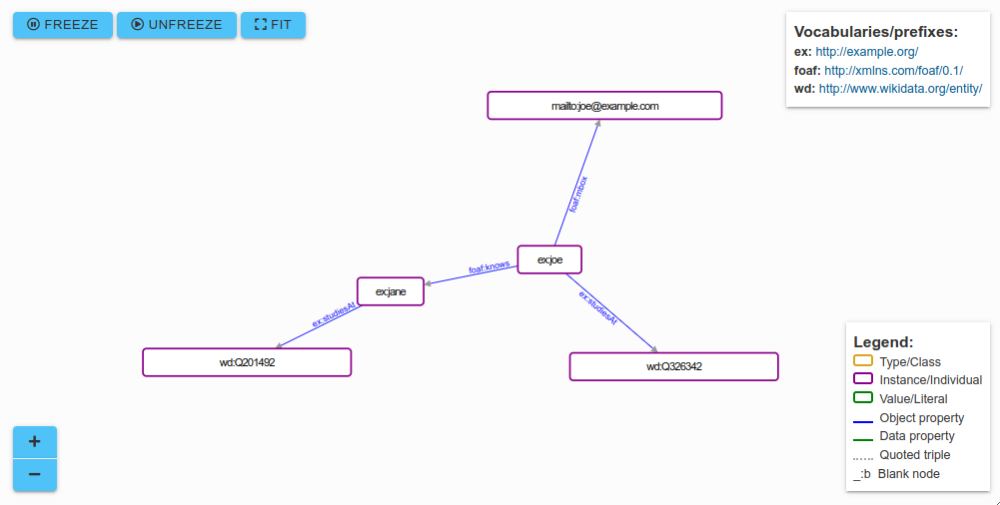

Welcome to the third lab in our series. After covering the basics of the Resource Description Framework (RDF) and RDFlib implementation in our previous session, this lab focuses on enhancing Knowledge Graphs with RDF Schema (RDFS). RDFS extends RDF by providing mechanisms to describe the semantics of properties and classes in RDF data. This includes specifying domains and ranges for properties, creating hierarchies of classes, and adding semantic relationships between entities.
By integrating RDFS, we aim to structure and define our data more effectively, allowing for improved data interoperability, reasoning, and querying capabilities. The addition of a semantic layer through RDFS enables the creation of more sophisticated and semantically rich Knowledge Graphs, facilitating better data understanding and use in applications ranging from data integration to information retrieval.
In this lab, we will explore the practical application of RDFS in building and querying enhanced Knowledge Graphs, highlighting its importance in semantic web technologies and its role in elevating the expressiveness and utility of our data structures.
Generally, if you did not finish any of the tasks from the previous week(s), make sure you catch up with any remaining tasks, since some of the new tasks build on previous work.
Here's an example solution: mytriples.ttl. You can visualize it with the mentioned online tools, it should look like this:

This is how to read it:
@prefix is used to define the namespaces used in the document. user: is the prefix for an example organization, and foaf: is the prefix for the Friend of a Friend (FOAF) vocabulary (we will cover it this lab).foaf:knows is used from the FOAF vocabulary to denote that the person identified by user:joe knows the person identified by user:jane.user:studiesAt is a placeholder property to indicate where the person identified by user:joe studies. Here, it points to the entity at Wikidata with the identifier Q326342, which represents Concordia University.foaf:mbox is used from the FOAF vocabulary to denote the mailbox (email) of the person identified by user:joe. The URI for the email address follows the mailto: scheme.user:studiesAt is also used to indicate where the person identified by user:jane studies, pointing to the entity at Wikidata with the identifier Q201492, which would represent McGill University..) which is used to terminate each set of statements about a subject.Note that we did not add a triple about Concordia being located in Montreal, since this triple is already available under the URI http://www.wikidata.org/
entity/Q326342: <http://www.wikidata.org/entity/Property:P131>
<http://www.wikidata.org/entity/Q340>.
Here is a possible solution: task2_2.py.
Note: if your output looks like this (a byte string, indicated by a leading b’):
b'@prefix foaf: <http://xmlns.com/foaf/0.1/> .\n@prefix rdfs: <http://www.w3.org/2000/01/rdf-schema#> .\n@prefix user: <http://example.org/> .\n\nuser:joe a foaf:Person ;\n rdfs:label "Joe" ;\n foaf:knows user:jane .\n\n'
you’re using Python 3.7 or earlier; in this case, print the graph with:
print(g.serialize(format='turtle').decode("utf-8"))
Here are a few examples for pattern matching and graph navigation:
# Find the subject for a given predicate and object
name = list(g.subjects(RDFS.label, Literal('Joe')))
if name:
print(name[0]) # prints the subject node, i.e., http://example.org/joe
else:
print("No subject found with label 'Joe'")
# Find the list of all predicates and objects for a given subject
joe_details = g.predicate_objects(rdflib.term.URIRef('http://example.org/joe'))
# Iterate through each predicate-object pair and print them
for pred, obj in joe_details:
print(pred, obj)
Note: Here, None is treated as a wildcard.
Here is a possible solution: task2_4.py.
In this task, you will embark on creating a Knowledge Graph about yourself using the Friend-of-a-Friend (FOAF) vocabulary.
FOAF is a fundamental vocabulary within the Semantic Web for describing people, their activities, and their relations to other people and objects. In this context, 'vocabulary' refers to a set of predefined terms and relationships used to describe and structure information in a way that is both universally understandable and machine-readable, facilitating the sharing and linking of data across different systems.
By utilizing FOAF, you will practice structuring personal information within a Knowledge Graph, leveraging standard vocabularies to ensure interoperability and semantic richness. This exercise is pivotal in understanding how to represent real-world entities and relationships in a machine-readable format, a crucial skill in data science and semantic web technologies.
Your first task is to create a knowledge graph describing yourself, using the Friend-of-a-Friend (FOAF) vocabulary:
Note: As you delve into the FOAF vocabulary, you may notice references to owl: (the Web Ontology Language). OWL provides a more expressive framework than RDFS for describing ontologies. We will explore some aspects of OWL in future lectures, which will further enhance your ability to create detailed and nuanced knowledge representations.
Ensure your graph accurately reflects the FOAF schema, using correct property names and data types for each entry. As learned in the previous lab, validate your triples to ensure their accuracy and adherence to the RDF standard. Then, attempt to load your new graph into the test programs developed with RDFlib in the previous lab, integrating what you've learned about RDF and RDFlib with the new semantic layer provided by FOAF.
Upon completing this task, you should have a deeper understanding of how to represent individual profiles within a knowledge graph context using the FOAF vocabulary. This exercise has not only reinforced your skills in RDF and Knowledge Graph construction but has also introduced you to the vital concept of semantic interoperability through standardized vocabularies.
An important observation from this task is that the semantics—meaning the properties and relationships—are represented in triples, just as the data itself. This uniform structure facilitates the integration and querying of data across diverse sources.
Interoperability, in this context, refers to the ability of different systems and applications to understand and use the data. Concretely, it means that someone else, or another application, can now understand the triples describing our person. This capability is crucial for interconnecting data across platforms, such as linking social network profiles or aggregating information from multiple sources to create a more comprehensive understanding of an individual or concept.
By creating a FOAF profile, you've taken a significant step towards grasping the importance of standardized vocabularies in achieving semantic interoperability. Reflect on how the properties and classes used in FOAF can be applied or extended to other domains, enhancing the ability to interconnect and make sense of social network data and beyond in your future work.
Your next task involves developing a new vocabulary using RDF Schema (RDFS): the Friends-of-Concordia-University (FOCU) schema. This task is designed to give you hands-on experience in defining and structuring a domain-specific vocabulary, which is crucial for creating semantically rich and interoperable knowledge graphs. By defining classes and properties specific to the educational context of Concordia University, you'll learn how to extend existing vocabularies and create meaningful connections between different entities.
This task requires you to create a new vocabulary that can express specific relationships and entities within the Concordia University community. Use RDFS to define the following:
Start with the provided template: focu.ttl. Then, fill in the placeholders in [square brackets] to perform the following steps:
Some notes on this task:
focu.io as the authority (domain name) is an educational simplification. In real-world scenarios, owning or controlling the domain name is essential for publishing authoritative vocabularies.focudata: as the namespace for the triples describing people; you could use another namespace here, like the example.org you've used before. The point here is that it is not good practice to mix schema information (in this case your FOCU schema) with data described using this schema into the same namespace. In other words, you want to be able to load the schema and the data separately from each other into a system. This separation enhances data management and schema evolution over time.By completing this task, you have not only learned how to design a domain-specific vocabulary using RDF Schema (RDFS) but also how to apply this vocabulary to represent real-world entities and relationships within a knowledge graph. This skill set is fundamental in the field of semantic web technologies, enabling the creation of structured, machine-readable data that supports complex data integration, querying, and reasoning processes.
The ability to extend existing vocabularies and define new terms is critical in developing applications that require a deep understanding of domain-specific knowledge. For instance, in AI-driven recommendation systems, accurately modeling the relationships between users, products, and preferences can significantly enhance the quality of recommendations. Similarly, in natural language processing (NLP) applications, well-defined vocabularies facilitate entity recognition and relationship extraction, enabling more sophisticated text analysis and understanding.
Moreover, the principles you've practiced here are directly applicable to the development of ontologies in knowledge-based systems, such as those used in healthcare for diagnosing diseases or in e-commerce for managing product information. By designing and utilizing vocabularies, you contribute to the foundation of interoperable and semantically rich data ecosystems that AI technologies leverage for advanced decision-making, predictive analytics, and personalized user experiences. Furthermore, these skills enable you to contribute to and benefit from collaborative data sharing initiatives, fostering a more connected and intelligent web ecosystem.
In this task, you will take a significant step forward by integrating your RDFlib program with real-world data sources to create your first intelligent agent. Using the FOAF+FOCU vocabulary triples you defined earlier, you will develop a program that can query and retrieve specific information about individuals within your knowledge graph. Furthermore, by merging this local graph with external data from DBpedia, your agent will gain the ability to provide enriched responses that include not only personal details but also geographical information about universities. This exercise will demonstrate the power of semantic web technologies in building interconnected, intelligent systems capable of complex queries and reasoning.
Enhance your RDFlib program from the previous week to read the FOAF+FOCU triples about individuals you've created.
The program should then prompt for a name and retrieve all available information from the graph for that individual. For instance, when searching for "Joe", the program will display details such as age and email:
Hello, I am your smart university agent. Who are you looking for?
> Joe
Joe is 22 years old and has the email address joe@example.com.
Moreover, if the person is affiliated with a university, your agent will also identify and report the city and country of the institution by merging your graph with data obtained from DBpedia. This capability allows for a richer interaction, providing comprehensive information about the person and their university:
Hello, I am your smart university agent. Who are you looking for?
> Jane
Jane is 24 years old and studies at Concordia University, which is located in Montreal, Canada.
Note: Since the FOAF/FOCU triples might not include city/country details for the universities, you'll need to integrate your graph with information from DBpedia to provide these answers.
Hint: Since here we’re using DBpedia to retrieve additional triples, make sure the students in your knowledge base are correctly linked to, e.g., http://dbpedia.org/resource/Concordia_University. Use the following namespace declaration:DBP = Namespace("http://dbpedia.org/property/")
and find the correct property to use for the location in DBpedia.
We’ll now make the AI even smarter, by also supporting the query “What is <X>”, where you retrieve triples about <X> from DBpedia, printing out the abstract information, e.g.:
Hello, I am your smart university agent. How can I help you? > What is Concordia University? Concordia University (French: Université Concordia) is a public research university
located in Montreal, Quebec, Canada. Founded in 1974 following the merger of Loyola
College and Sir George Williams University, Concordia is one of the three universities
in Quebec where English is the primary language of instruction (the others being McGill
and Bishop’s). . . .
To implement this, you can start by checking whether a “What is <X>” pattern is present in the user’s input:
# Define patternpattern = "What is"if pattern in user_input: # Extract the entity name after the pattern, # handling potential trailing question mark entity_name = user_input.split(pattern, 1)[1].split("?", 1)[0].strip()
Implement the following two steps:
Feel free to enhance your agent's responses with additional university-related information if desired. Ensure your program gracefully handles situations where no data is found on DBpedia for a given query, providing a user-friendly message or suggesting alternative queries.
By completing this task, you've ventured into the realm of intelligent agents, using knowledge graph data to answer complex queries. This exercise illustrates the practical application of RDF and RDFS in real-world scenarios, showcasing how data from different sources can be integrated to create knowledge-rich applications. Such agents are foundational in developing AI applications like virtual assistants, educational tools, and personalized recommendation systems. Notice how similar this exercise is to the functionality of AI assistants like Google Assistant, Siri, or Alexa: By querying DBpedia for ‘What is <X>?’, you’re emulating their technique of using knowledge graphs to provide informative answers. This process, known as grounding, is a departure from the pattern-matching approach seen in earlier chatbots like Eliza, demonstrating a more advanced and context-aware method of responding to user queries.
This task not only enhances your understanding of knowledge graph technologies but also prepares you for future explorations in AI, including the use of SPARQL for more sophisticated data retrieval and the integration of machine learning techniques, including large language models (LLMs), for even smarter agent behavior, covered later in this course.
This lab has equipped you with practical experience in constructing and querying Knowledge Graphs using RDF, RDFS, and integrating external knowledge sources like DBpedia. The exercises demonstrated the critical role of Knowledge Graphs in enhancing information retrieval, interoperability, and decision-making processes across a range of applications, from academic research to industry solutions.
As you advance through this course, the skills acquired here form a solid foundation for upcoming topics. The introduction to Knowledge Graphs in these early weeks prepares you for more intricate subjects, including advanced querying techniques with SPARQL, the integration of machine learning to analyze and predict based on graph data, and considerations of ethical implications in deploying AI technologies.
In the subsequent lectures and labs of this course, as well as the course project, you will continue to build on these foundational skills. The focus will gradually shift towards exploring more sophisticated challenges and opportunities within Knowledge Graphs and AI, equipping you with the technical expertise to innovate and solve complex problems in the field of computer science.
That's all for this lab!